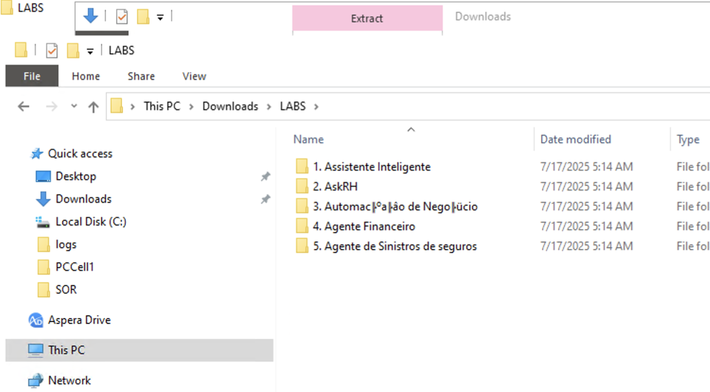

DADOS NECESSÁRIOS PARA OS
LABS
Siga os passos abaixo:
- Faça o download do aquivo LABS.zip para o seu compudador clicando no
link abaixo:
https://ibm.biz/BdeEFb
- Descompacte o arquivo zip
- Clique com o botão direito do mouse sobre o arquivo e selecione
“Extract All” ou “Extrair Tudo”

- Será gerada uma estrutura de diretórios conforme figura abaixo. Cada
pasta contém os arquivos necessários para os laboratórios
correspondentes.

- Durante a execuçãodos labs, o agente irá solicitar algumas
informações (Nome, número de conta, etc). Utilize o botão abaixo para
solicitar as informações que você pode usar